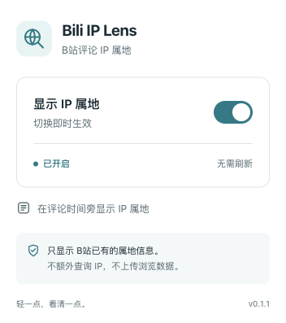

<!doctype html>
<html lang="zh-CN"><meta charset="utf-8"><title>Bili IP Lens · Store screenshot</title>
<style>
*{box-sizing:border-box}html,body{margin:0;width:1280px;height:800px;overflow:hidden}body{background:#f3f8f8;color:#152c34;font-family:-apple-system,BlinkMacSystemFont,"PingFang SC","Microsoft YaHei",sans-serif}.canvas{position:relative;width:1280px;height:800px;padding:76px 84px}.brand{display:flex;align-items:center;gap:16px;font-size:24px;font-weight:700}.brand img{width:48px;height:48px}.copy{margin-top:64px;max-width:640px}h1{font-size:58px;line-height:1.28;letter-spacing:-2px;margin:0 0 28px}.accent{color:#087b86}.intro{font-size:22px;line-height:1.9;margin:0;max-width:580px}.facts{display:flex;gap:12px;margin-top:34px}.facts span{font-size:16px;padding:10px 16px;background:#e5f4f4;border:1px solid #c6e6e6;border-radius:7px;color:#087b86}.popup{position:absolute;right:90px;top:144px;width:352px;box-shadow:0 18px 60px #13303a18;border:1px solid #dce6e9;border-radius:12px;overflow:hidden;background:white}.popup img{display:block;width:352px}.caption{position:absolute;right:90px;top:584px;width:352px;text-align:center;font-size:15px;color:#526971}.footer{position:absolute;left:84px;bottom:58px;color:#526971;font-size:16px}.note{margin-top:28px;color:#526971;font-size:15px}
</style><main class="canvas"><div class="brand">Bili IP Lens</div><div class="copy"><h1>B站评论时间旁，<br><span class="accent">显示 IP 属地。</span></h1><p class="intro">只显示 B站已经提供的地区信息。<br>工具栏一键开关，已加载评论即时响应。</p><div class="facts"><span>免费开源</span><span>不额外查询 IP</span><span>不上传浏览数据</span></div><p class="note">适用于兼容的现代评论组件；不支持直播实时弹幕属地。</p></div><div class="popup"></div><p class="caption">真实扩展弹窗 · v0.1.1</p><div class="footer">8TrafficAI · MIT · 基于 BiliReveal 的评论接入方式改编</div></main></html>
